Mein Ansatz –
Verhalten hat immer einen Sinn. Familien brauchen Verständnis statt schneller Urteile. Veränderung wächst dort, wo Sicherheit entsteht, Beziehung trägt und klare, praktische Unterstützung hilft.
♡ Ich schaue hin. Ich gehe mit. Ich helfe, neue Wege zu finden.
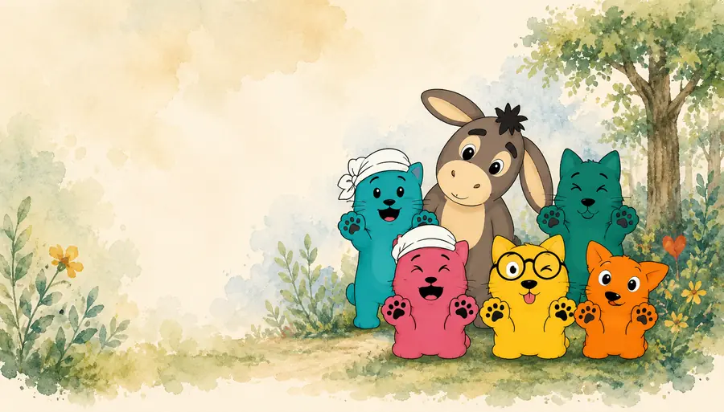
Mein Ansatz –
Verhalten hat immer einen Sinn. Familien brauchen Verständnis statt schneller Urteile. Veränderung wächst dort, wo Sicherheit entsteht, Beziehung trägt und klare, praktische Unterstützung hilft.
♡ Ich schaue hin. Ich gehe mit. Ich helfe, neue Wege zu finden.

Meine Philosophie
Ich entschuldige kein verletzendes Verhalten. Aber ich möchte verstehen, was es schützt, was es ausdrückt oder was gerade fehlt.
Hinter jedem Verhalten steht eine Geschichte – oft eine, die von Überforderung, Angst, alten Erfahrungen oder unerfüllten Bedürfnissen erzählt.
Wenn diese Geschichte verstanden ist, werden neue Entscheidungen möglich. Nicht aus Druck, sondern aus Klarheit. Nicht aus Macht, sondern aus Verbindung.
Waldkätzchen bewertet Verhalten nicht vorschnell und korrigiert es nicht. Im Mittelpunkt steht eine andere Frage:
Was möchte uns ein Verhalten zeigen?
Die Tiere zeigen das Verhalten. Der Wald zeigt den Zusammenhang. Die Waldkätzchen eröffnen neue Perspektiven. ♡
Die Waldkätzchen – ♡
Die Waldkätzchen greifen nicht sofort ein. Sie beobachten, fragen nach und helfen dabei, eine Situation aus mehreren Blickwinkeln zu betrachten.


Der Wald – was im Hintergrund wirkt.
Verhalten entsteht nie losgelöst vom Umfeld. Der Wald steht für alles, was eine Situation beeinflusst, aber nicht immer sofort sichtbar ist. Diese Bildwelt macht komplexe Situationen verständlicher, ohne Menschen auf ein bestimmtes Verhalten festzulegen.
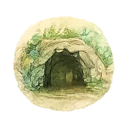
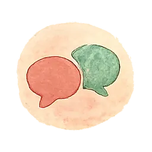
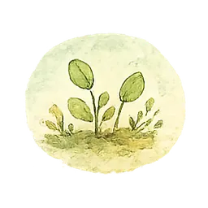
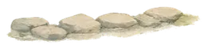
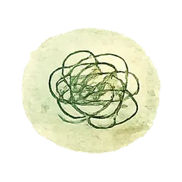

Die Tiere – was im Alltag sichtbar wird.
Die Tiere stehen für unterschiedliche Verhaltensweisen. Sie bewerten nicht, sie beschreiben. Keines dieser Tiere ist gut oder schlecht – jedes zeigt eine Möglichkeit, auf eine Situation zu reagieren. Ein Mensch kann je nach Umfeld, Beziehung oder Belastung unterschiedliche Tiere zeigen.
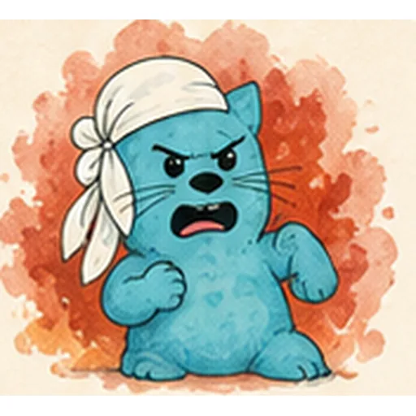
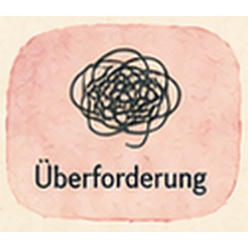


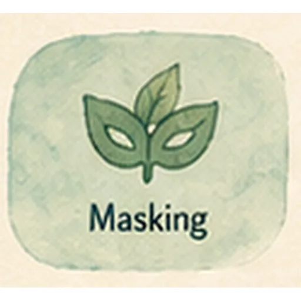

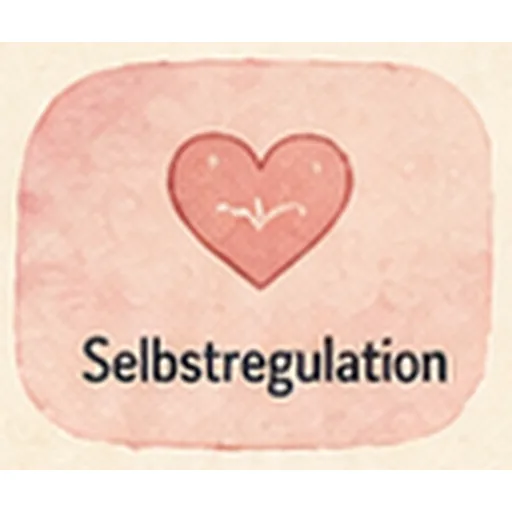
♡ Die Tiere sind keine Schubladen und keine Diagnosen. Sie sind eine gemeinsame Sprache, mit der Verhalten, Gefühle und Zusammenhänge leichter besprochen werden können. Ein Kind ist nicht „schwierig“. Ein Mensch ist nicht „zu viel“, „zu still“ oder „zu anstrengend“. Das sichtbare Verhalten zeigt zunächst nur, was in diesem Moment möglich ist.
So funktioniert Waldkätzchen
Am Anfang steht eine konkrete Situation: Ein Kind eskaliert regelmäßig im Unterricht. Ein Jugendlicher zieht sich vollständig zurück. Ein Elternteil erlebt Nähe ständig als Kampf. Ein Team weiß nicht mehr, wie es reagieren soll. Diese Situation betrachten wir Schritt für Schritt.
Für wen Waldkätzchen geeignet ist
Überall dort, wo Menschen Verhalten besser verstehen möchten – für Gespräche mit Kindern, Jugendlichen und Erwachsenen sowie für die Reflexion in Teams:
- Familien
- Kindertagesstätten und Schulen
- Wohngruppen und Jugendhilfe
- Beratungsstellen
- heilpädagogische Angebote
- pädagogische Teams
- Supervision und Fallbesprechungen
Was Waldkätzchen nicht ist
Waldkätzchen ersetzt keine medizinische, psychotherapeutische oder diagnostische Abklärung. Das Konzept stellt keine Diagnosen und teilt Menschen nicht dauerhaft in Typen ein.
Waldkätzchen sucht nicht nach Schuld, sondern nach Zusammenhängen. Kinder sind nicht das Problem – auch Eltern, Fachkräfte und andere Bezugspersonen reagieren häufig aus eigener Überforderung, Unsicherheit oder Hilflosigkeit.
Veränderung beginnt dort, wo Verhalten nicht mehr nur bekämpft, sondern verstanden wird.

Wie ich arbeite
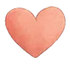
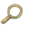
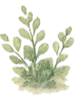
Ich arbeite alltagsnah, ehrlich und mit Herz.
Immer mit Respekt vor eurer Geschichte und euren Stärken. ♡

Ihr müsst den Weg nicht allein gehen.
Ich schaue mit euch hin – und finde neue Wege, die zu euch passen.
Kontakt aufnehmen
Schreib mir – ich melde mich zeitnah zurück.

Danke für deine Nachricht!
Ich melde mich so bald wie möglich.
(Demo – es wurde noch nichts versendet.)